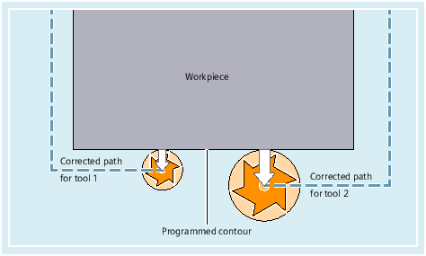

Workpiece dimensions are programmed directly (e.g. according to the production drawing). Therefore, tool data, such as milling tool diameter, cutting edge position of the turning tool (counterclockwise/clockwise turning tool) and tool length, does not have to be taken into consideration when creating the program.
When machining a workpiece, the tool paths are controlled according to the tool geometry so that the programmed contour can be created with any tool.
So that the control can calculate the tool paths, the tool data must be entered in the tool compensation memory of the control. Only the required tool (T...) and the required offset data record (D...) are called via the NC program.
While the program is being processed, the control fetches the offset data it requires from the tool offset memory, and corrects the tool path individually for different tools:
See also:
Tool length compensation
Tool radius compensation
Tool compensation memory
Tool types and tool parameters
Activating / deactivating tool offsets (D, D0):
Suppressing tool offsets (SUPD)
Programmable tool offset (TOFFL, TOFF, TOFFR, TOFFLR):